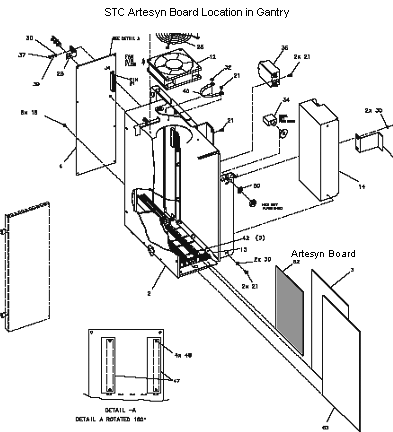

Operating Documentation
Direction 5134894-800, Rev# 9
GOC4 Upgrade Installation & Service Information
Operating Documentation |
| Required Persons | Preliminary Reqs | Procedure | Finalization |
|---|---|---|---|
| 1 |
| Last Revised: | 12 July 2004 |
| POTENTIAL FOR SHOCK | |
| VOLTAGE MAY BE PRESENT. | |
| Use proper lockout/tagout procedures before performing Upgrades in the gantry. See safety menu of Service Document gui for appropriate procedures. |

Move table to lowest elevation.
Remove gantry side covers.
Turn OFF all three (3) switches on status control box, on right side of the gantry.
Open Gantry Left Side Cover.
Loosen two (2) screws that fasten the front cover to the STC.
Remove assembly cover.
Loosen the two wingnuts on the STC Chassis, and rotate the STC Chassis 90 degrees. Then lock it into position.
| Prevent permanent damage to the static-sensitive boards. Attach the anti-static wrist strap to your wrist and to a bare metal grounding point on the gantry before you continue. | |
Attach wrist grounding strap, remove, and set aside, Scom Circuit Board on ground mat.
Unplug the coaxial cable.
| NOTE: | It is not uncommon to have to remove the card next to the Artesyn Board to replace the Artesyn. |
Unscrew the top and bottom fasteners, then remove the Artesyn board.
On the new STC Artesyn board, check jumpers (see Table 1) and switches (see Table 2)
Table 1: STC (Artesyn III) Board Jumper Settings
| JUMPER | FUNCTION | GE CONFIGURATION | COMMENTS |
| JP1 | Port A RI/DCD | J1:1-2 | |
| JP2 | Port B RI/DCD | J2:2-3 | |
| JP3 | RS-232 Handshaking | J3:1-2 | |
| JP4 | Watchdog Enable | removed | Watchdog Disable |
Table 2: STC CPU (Artesyn III) Board DIP Switch Settings
| SWITCH NUM | CONFIGURATION | FUNCTION | COMMENTS | |
| 1 | ON | Closed | STC node | Selects board for STC Chassis |
| 2 | ON | Closed | STC node | Selects board for STC Chassis |
| 3 | OFF | Open | Primary Nodes | Selects primary nodes |
| 4 | OFF | Open | n/a | Not applicable |
| 5 | ON | Closed | nbsClient view | View logs via nbsClient/LAN |
| 6 | OFF | Open | n/a | Not applicable |
| 7 | ON | Closed | EPROM Boot | Power Up view EPROM Boot |
| 8 | OFF | Open | Test Disable | Self Test Mode disabled |
Carefully install new STC Artesyn Board into card rack assembly.
Reassemble Gantry STC covers. Use push-to-release tab to rotate card cage back into position.

| NOTE: | Gantry covers were removed and LOTO performed in previous section. |
To access the OBC chassis, loosen the 8 captive screws, and remove the OBC Front Cover.
Unplug serial and ethernet cables from the OBC Artesyn Board.
Loosen Artesyn Board top and bottom fasteners with a Phillips #2 screwdriver.
| Prevent permanent damage to the static-sensitive boards. Attach the anti-static wrist strap to your wrist and to a bare metal grounding point on the gantry before you continue. | |
Pull Artesyn board out using black plastic tabs located on top and bottom of the board.
Place the board in an Anti-Static bag.
On the new OBC Artesyn board, check jumpers (see Table 3) and switches (see Table 4)
Table 3: OBC CPU (Artesyn III) Board Jumper Settings
| JUMPER | FUNCTION | GE CONFIGURATION | COMMENTS |
| JP1 | Port A RI/DCD | J1:1-2 | |
| JP2 | Port B RI/DCD | J2:2-3 | |
| JP3 | RS-232 Handshaking | J3:1-2 | |
| JP4 | Watchdog Enable | removed | Watchdog Disable |
Table 4: OBC CPU (Artesyn III) Board DIP Switch Settings
| SWITCH NUM | CONFIGURATION | FUNCTION | COMMENTS | |
| 1 | OFF | Open | OBC node | Selects board for OBC Chassis |
| 2 | ON | Closed | OBC node | Selects board for OBC Chassis |
| 3 | OFF | Open | Primary Nodes | Selects primary nodes |
| 4 | OFF | Open | n/a | Not applicable |
| 5 | ON | Closed | nbsClient view | View logs via nbsClient/LAN |
| 6 | OFF | Open | n/a | Not applicable |
| 7 | ON | Closed | EPROM Boot | Power Up view EPROM Boot |
| 8 | OFF | Open | Test Disable | Self Test Mode disabled |
Carefully install new OBC Artesyn Board into card rack assembly.
Install OBC Cover. Torque to 2 N-m (17.7 in-lbs).
No finalization required.